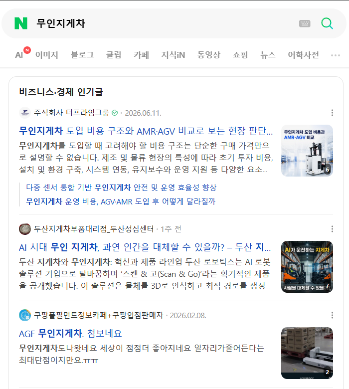
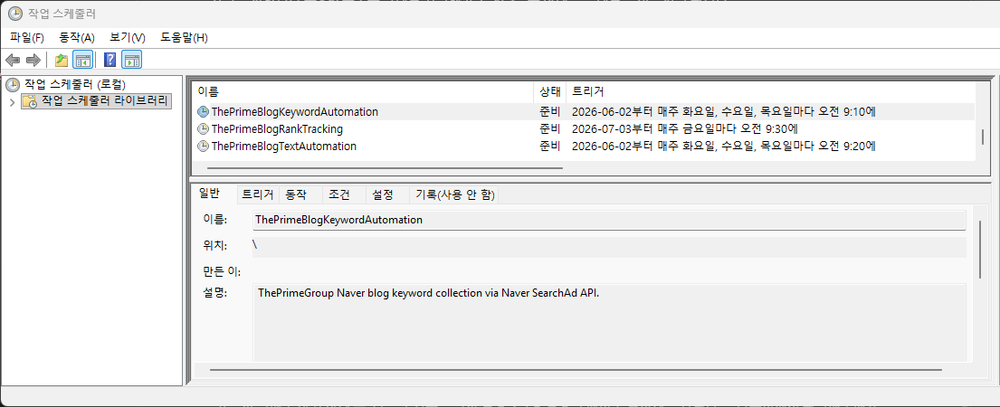
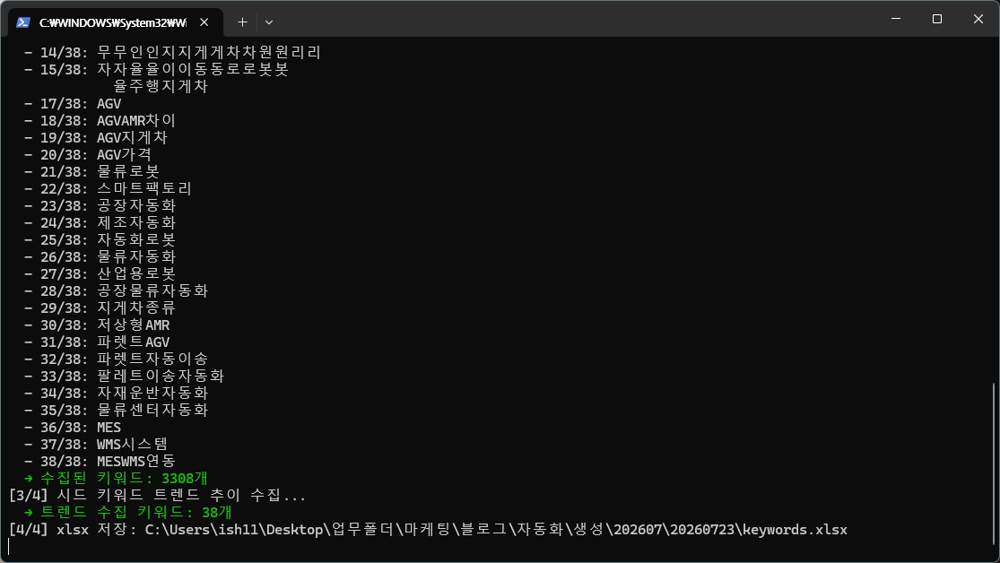
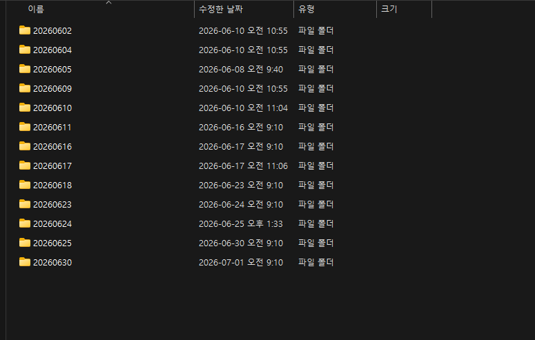
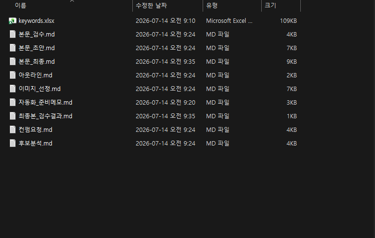
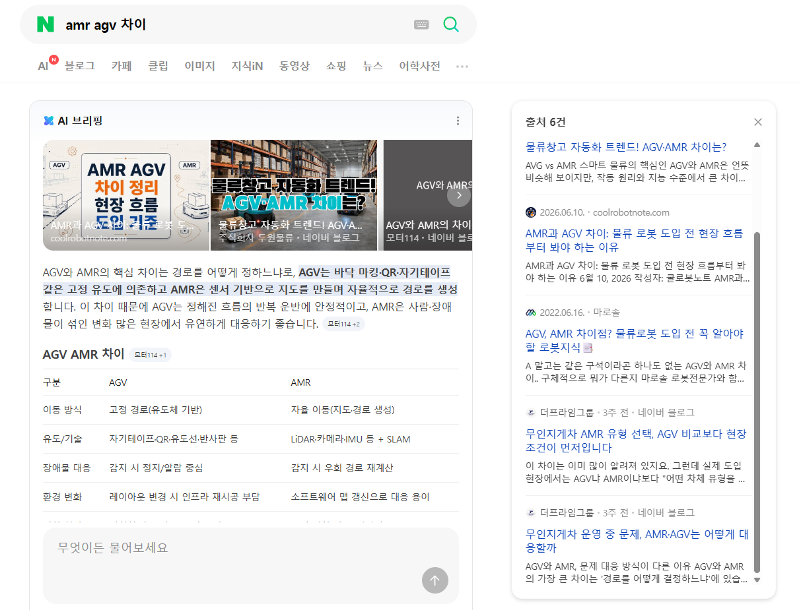
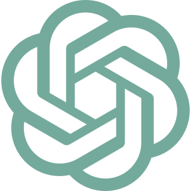

RANKINGS
7월 마지막 측정에서 10개 키워드 모두 검색에 노출됐습니다.
네이버 블로그탭 순위 · 2026.07.31
- AMR4위무인지게차1위AGV2위
- 메인 키워드 순위
- 순위 요약
- 5위 이내 9개1위 5개
TRACKED KEYWORDS · 10
- AMR
- 무인지게차
- AGV
- AMR 뜻
- AMR·AGV 비교
- 무인지게차 도입 비용
- 도입 체크리스트
- 안전 기준
- 5톤 무인지게차
- 더프라임그룹

AI CONTENT OPERATIONS
수동 AI 활용으로 시작해 문서 업무와 블로그 자동화, 검색 성과까지 확장했습니다.
2024.06 – 현재 · 워크플로 구축·운영 · 출처 확인·수정·최종 검수
CASE SUMMARY
수동 AI 활용에서 시작해 반복 제작을 워크플로로 연결했습니다. 생성 원고는 제가 블로그 검수 스킬을 실행해 1차 점검하고, 직접 2차 검수했습니다. 발행 후에는 검색 순위를 수집해 다음 주제 선정에 반영했습니다.
AI ADOPTION
이미지 생성과 글 초안부터 사업 문서까지 AI를 써보고 결과를 검토했습니다.오래 걸리는 단계와 사람이 판단할 단계를 갈랐습니다.
MANUAL OPERATION
ChatGPT·Gemini·NotebookLM을 활용해 자료를 정리하고, 블로그 이미지와 글 초안을 만들었습니다. 생성된 내용의 정확도와 메시지를 직접 확인하고 수정한 뒤 발행했습니다.
OPERATED CHANNELS
네 채널의 기획·제작·발행을 맡았고, 자동화는 이 중 네이버 블로그에만 적용했습니다.
EXPORT VOUCHER CASE
Perplexity로 시장과 지원사업 자료를 조사하고, Gemini와 NotebookLM으로 사업계획서에 필요한 정보를 정리했습니다.
시장 환경에서 회사 역량, 수출 목표와 실행 계획으로 이어지도록 구조를 잡고, 요구사항과 근거를 다시 확인하며 사업계획서를 세 차례 개정했습니다.
AMR 시장분석 PPT와 현장평가 서류 패키지를 준비했고, 발표와 질의응답은 관련 부서가 맡았습니다.
DOCUMENT RESULT회사는 2026년 1차 수출바우처 사업에 선정되어 총 4,500만 원 규모의 마케팅 사업계획을 확정했습니다. 같은 신청으로 동시 접수되는 글로벌강소기업 1,000+ 유망기업에도 선정됐습니다.
BLOG AUTOMATION
주제와 키워드를 입력해 원고를 생성한 뒤, 제가 블로그 검수 스킬을 실행해 1차 검수를 진행했습니다.이후 출처와 사실관계를 직접 대조해 내용을 수정하고, 2차 검수로 최종본을 확정했습니다.발행 후에는 검색 순위를 확인해 다음 콘텐츠의 주제 선정에 반영했습니다.
WORKFLOW
※ 1회 관찰 기준
사실 자료와 기존 발행 이력을 함께 입력합니다.
원고 생성 뒤 블로그 검수 스킬을 실행해 1차로 점검합니다.
출처와 사실관계를 대조해 내용을 수정하고 최종본을 확정합니다.
1·2차 검수를 마친 원고를 발행 단계로 넘깁니다.
10개 키워드 순위를 누적해 약한 키워드는 보강하고, 안정 키워드는 중복을 줄입니다.
RUN RECORD
실행 폴더와 검수 산출물이 날짜별로 쌓입니다.




SEARCH PERFORMANCE
AMR, AGV, 무인지게차를 메인 키워드로 설정하고, 실제 도입 검토자가 찾을 만한 비교·비용·안전·체크리스트 주제로 콘텐츠를 확장했습니다.
RANKINGS
네이버 블로그탭 순위 · 2026.07.31
TRACKED KEYWORDS · 10

AI CITATIONS
약 10.3배 증가
네이버 자체 집계 기준. 5월과 7월의 인용수 변화를 관찰한 값이며 자동화만의 영향으로 단정하지 않습니다. 누적 인용수에는 자동화 도입 이전에 발행한 콘텐츠가 포함되어 있습니다.

TRAFFIC
약 113% 증가
홈페이지 신규 문의3건
조회수와 문의는 같은 기간의 별도 지표로, 인과관계를 뜻하지 않습니다.
네이버 블로그 월간 통계 기준. 시점 전후를 비교한 관찰값입니다.
AI WORKSPACE
현재는 ChatGPT·Claude Code·Codex를 사용합니다.프로젝트 지침과 검수 절차를 세팅해 반복 작업의 기준을 유지합니다.
TOOL ROLES

GPT이미지 제작과 콘텐츠별 단위 작업에 직접 활용합니다.
블로그 작업 실행과 문맥 관리, 반복 검수를 담당합니다. 발행 이력과 사실 자료는 사용자 정의 검수 명령으로 확인합니다.
프로젝트 구조와 콘텐츠 흐름을 기획하고, 사실 확인·처음 보는 사람의 이해도·디자인 검증을 작업별 스킬로 나눠 진행합니다.
CONTEXT SETUP
프로젝트마다 사실, 증거, 결정 사항과 작업 지침을 분리해 저장했습니다. Claude Code와 Codex에 프로젝트별 지침과 검수 절차를 세팅해 반복 작업의 기준을 유지합니다.
SCOPE & PRINCIPLES